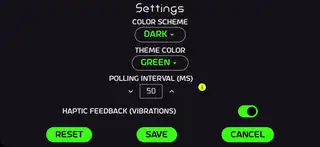

VirtualGamePad Mobile
شبكات وملفات
VirtualGamePad lets you use your Android phone as a gamepad for your PC (Windows and Linux). It's similar to paid apps like DroidJoy, but free and open source. Benefits of using VirtualGamePad: Free and Open Source : No ads, no tracking, no paywalls. Secure : The code is open for anyone to review. N
✓ ترخيص مفتوح (GPL-3.0-only) · آخر تحديث: 2026-04-05
0.4.2الإصدار
2.1 MBالحجم
GPL-3.0-onlyالرخصة
Open in Kanzتحميل APK (2.1 MB)
Download APK
SHA-256: cf8e4dd87d67e5597d9260eb31e1261c8d9222745e7fcd88ac97ddbd07ea5db7

امسح الكود لفتح صفحة التطبيق
Scan to open this app page
لو كنز مش متثبت عندك: نزّل متجر كنز.
Not installed? Get the Kanz store.